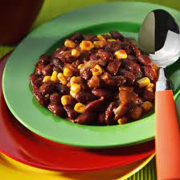

Corn Tchap

Description
Here is a beautiful Cameroonian recipe! Corn tchap is a succulent preparation made from red beans, fish and corn.
Ingredients
- 200g red kidney beans
- 2 fish fillets
- 2 onions
- 1 small piece of ginger
- 200g canned corn
- 2 tomatoes
- 3 tablespoons vegetable oil
- salt
- pepper
Steps
- Place the cooked bean in a large saucepan. Add corn and vegetable oil. Mix.
- Peel and finely chop the onions
- Dice the tomatoes.
- Add the onions, tomatoes, fish, ginger, a little salt and pepper to the pan containing the beans and corn.
- Cover with water and simmer for 25 minutes, stirring regularly. If needed, add a little extra water.
- Adjust the seasoning if necessary and serve immediately.